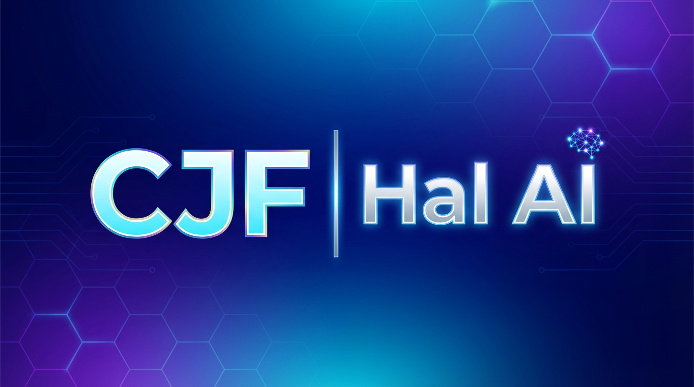
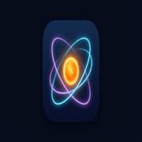

Solar fusion and the weak interaction
Weak interaction, building helium-4 in the proton–proton chain, and why the Sun shines.
Simplified sequence for p + p → ²H + e⁺ + νₑ. Two protons meet; a W⁺ mediates the weak step; a deuterium nucleus appears; the W’s decay products fly outward (timing and distances not physical).
Initial fusion phase — the weak step
In the Sun, hydrogen nuclei are protons. They do not stick together just by the strong nuclear force alone, because two protons alone are not a stable bound state at solar temperatures. The step that lets fusion proceed is weak: in p + p → 2H + e⁺ + νe, one of the two colliding protons undergoes a flavour change — an up quark becomes a down quark — so that nucleon becomes a neutron bound with the other proton in deuterium. A proton is uud; a neutron is udd (one up, two down).
That flavour change is mediated by a W boson (in this process, a W⁺). The W does not travel far: it decays almost immediately. A common decay channel is into a positron (e⁺) and an electron neutrino (νe).
In the full proton–proton (pp) chain, this weak step occurs when two protons interact; the result is a deuterium nucleus (one proton + one neutron), which can then capture another proton and later join other light nuclei until helium-4 is formed. That neutron is an essential ingredient on the way to helium, even though helium itself is assembled over several further steps.
Next stages: from deuterium to helium-4 (pp I branch)
After deuterium (2H) appears, further steps use the strong nuclear force (not the W boson). In the main pathway in the Sun, a deuterium nucleus captures another proton to make helium-3 (3He), and two helium-3 nuclei then combine to make ordinary helium, helium-4 (4He), while ejecting two protons back into the plasma. The diagrams below use the same “blobs for nucleons” style as the quark picture above: blue circles are protons, orange (dashed) circles are neutrons.
²H and a proton move together; they fuse into ³He; a gamma photon (energy) appears as the nucleus settles.
²H + p → ³He + γ
Two ³He nuclei collide; ⁴He forms; two protons are kicked out and carry away energy (flash is symbolic).
³He + ³He → ⁴He + p + p
Counting nucleons, two 3He nuclei supply six nucleons; 4He uses four, and the two ejected protons account for the other two — so charge and baryon number stay balanced. Those recycled protons can enter the chain again.
Where the energy comes from
The Sun’s power is not mainly “from the W boson” in a direct sense; the W step is rare and slow, but it unlocks the chain. Most of the energy release is tied to how tightly nucleons are bound when they assemble into helium-4.
A helium-4 nucleus is extraordinarily stable. Over the dominant branch, net four protons are converted into one helium-4 nucleus (two protons are temporarily incorporated earlier and released again in the 3He + 3He step, so they re-enter the plasma and are not part of the net mass balance). Compare the rest mass of those four protons to the rest mass of the ⁴He nucleus plus the positrons and neutrinos emitted in the weak steps: the products are slightly lighter. That missing mass is the mass defect; by E = Δm c² it appears as energy (photons, particle motion, and neutrino energy).
In practice that energy shows up as gamma photons (step 2 is explicit), as kinetic energy of the recoiling nuclei and ejected protons, and — in weak steps — as energy carried by neutrinos (which mostly leave the Sun without depositing heat) and by positrons that soon annihilate with electrons, yielding more photons. The thermal glow of the Sun is ultimately those photons and particle motions thermalised in the dense plasma.
The helium-4 side has slightly less rest mass than the starting hydrogen nuclei (plus escaping light particles). That Δm is what becomes sunlight and heat via E = Δm c².
Neutrinos, positrons, and other scale
Round numbers for intuition — not exact to every decimal.
- Neutrinos through your hand. One square centimetre in the middle of your palm is crossed by about 60 billion solar neutrinos each second (ballpark).
- What happens to the positrons? Yes — a positron is the electron’s antiparticle. In the hot, dense solar plasma, positrons from the weak step soon meet electrons. The usual outcome is annihilation: e⁺ + e⁻ → γ + γ (two gamma photons when both start nearly at rest; each has an energy of 511 keV, the rest mass of an electron). That energy is deposited locally and joins the general thermal bath of the core — it becomes part of the heat that ultimately drives convection and, over a very long random-walk, sunlight.
- Neutrinos vs sunlight delay. Neutrinos from the core stream out in seconds (reaching Earth in minutes), taking a few percent of the fusion power with them. The bulk of the energy stays in the plasma as photons and particle motion and random-walks toward the surface over a very long time — often quoted on the order of tens of thousands to about a million years — before it emerges as sunlight. So neutrino detectors can sample “the core now”; the light we see is the end of a much slower diffusion chain.
- Energy per “package” of helium. For the net conversion of four protons into a helium-4 nucleus (with the usual leptons and photons), the total energy released is about 26.7 MeV — most of it as kinetic energy of nuclei and photons, a few percent carried away by neutrinos.
- How hot is “fusion hot”? The solar core is about 15 million kelvin and enormously compressed. Even so, the proton–proton reaction is slow: only a tiny fraction of collisions tunnel close enough for the weak interaction to fire, which is why the Sun burns steadily for billions of years instead of flashing out.
- Mass loss. Because fusion energy ultimately escapes as radiation, the Sun loses rest mass at roughly 4 × 109 kg s−1 (about four million tonnes per second) — consistent with its luminosity through E = mc²; the solar wind carries off extra mass, but far less than this photon channel.
Small precision notes (optional)
- Motion strips under several diagrams are pedagogical cartoons; the D–T fusion figure animates in place. Use the Motion switch to show, hide, or stop motion at any time.
- All diagrams are schematic: quarks are confined in hadrons; real calculations use quantum theory and measured masses.
- The Sun also runs pp II / pp III side chains and a modest CNO contribution (roughly ~1% of luminosity in standard solar models); the reactions above are the main pp I branch that carries most of the fusion rate.
- A minor pep channel (p + p + e⁻ → 2H + νe) makes deuterium without a positron; it is rare in the Sun but important for some neutrino measurements.
- Stellar models use precise nuclear masses and reaction rates; the qualitative story — tighter binding → mass defect → energy — is the same.
Fusion reactors on Earth
The physics is the same mass defect idea as in the Sun, but almost every practical detail differs. Stars are held together by gravity; a laboratory plasma would hit the walls in microseconds unless something else confines it. The best-known approach is a doughnut-shaped torus of hot plasma inside powerful magnetic fields — the principle behind tokamaks and related devices.
It can seem surprising that the plasma’s electron (and ion) density n is vastly smaller than in air. The diagram is comparing how many charged particles occupy each cubic metre. Sea-level air contains on the order of 10²⁵ molecules per cubic metre — a huge count of atoms, even though the gas is chemically neutral and cold. A tokamak is pumped to a good vacuum and only a small amount of fuel is ionised and heated; typical line-averaged densities are nearer 10¹⁹–10²⁰ m⁻³, hence the rough one part in a million figure next to air. The plasma is still extremely hot and can carry large fusion power per cubic metre in a reactor because reaction rates depend on temperature and confinement as well as n — and because each ion is far more energetic than an air molecule. If one tried to hold air-like particle density at 100–200 million kelvin, the implied pressure and wall loading would be far beyond what magnetic fields and materials can manage today, so experiments deliberately work with a tenuous, fully ionised fuel. The Sun’s core, by contrast, is both very hot and enormously compressed by gravity — a regime a tokamak does not try to copy.
Why it is harder on Earth
The Sun’s core is only about 15 million kelvin, but the product of density, temperature, and confinement time is enormous because of the star’s mass. In a tokamak the plasma is vastly more tenuous than lead or water, so to get useful fusion power one typically aims for deuterium–tritium (D–T) reactions at roughly 100–200 million kelvin — hot enough that hydrogen is fully ionised and collision rates are high, using a fuel whose cross-section is far larger than the Sun’s slow proton–proton chain at laboratory densities.
2H + 3H → 4He + n + 17.6 MeV
Most of that energy emerges in the neutron (the helium nucleus, or α particle, carries the rest). The neutron is not confined by the magnetic field; it flies into the surrounding blanket, where its kinetic energy can be turned into heat for a power cycle — and, with a lithium-containing blanket, some reactions can breed tritium to replace the scarce fuel consumed.
Main challenges — and directions in research
- Confinement and stability. Turbulence and instabilities let heat and particles leak to the wall; disruptions can damage components. Mitigation uses refined magnetic geometry, real-time control, fuel pacing, and materials that can survive transients. Stellarators twist the magnetic field in hardware so the plasma can be steadier without relying as heavily on a large plasma current as in a tokamak.
- The Lawson / triple-product condition. Fusion power competes with radiation losses. Roughly, one needs a large enough product of density (n), confinement time (τ), and temperature (T). Larger machines, stronger superconducting magnets (including newer high-temperature superconductor designs), and better understanding of transport all push toward net energy gain.
- Materials and neutrons. D–T neutrons batter the first wall and structural steel, causing activation and embrittlement. Research paths include advanced alloys, tungsten armour, reduced-activation steels, and long-term maintenance strategies for a power plant.
- Tritium supply. Tritium is scarce in nature; a reactor must breed it, typically via lithium in the blanket (n + 6Li → 4He + 3H and related channels). Demonstrating reliable tritium breeding ratio > 1 is an engineering milestone.
- From fusion heat to electricity. Even after Q > 1 (more fusion energy out than heating put in), a plant needs efficient thermal cycles, availability, and economic competitiveness with other low-carbon sources.
Alternatives to a simple torus
Stellarator: a torus-like device with twisted, non-planar coils that aim for steady operation with less dependence on induced plasma current — trade-offs include complexity of manufacture and optimisation of the three-dimensional shape.
Inertial confinement fusion (ICF): a tiny fuel capsule is compressed by intense lasers or other drivers; fusion burns while inertia briefly holds the fuel together — very different engineering from magnetic bottles, with its own precision and repetition-rate challenges for power production.
Other magnetic concepts include reversed-field pinches, field-reversed configurations (FRCs), and magnetic mirrors (and compact-torus variants). Each tries to improve stability, simplify engineering, or reach high β (plasma pressure relative to magnetic pressure); none has yet matched the tokamak’s experimental maturity for fusion energy gain, but the ecosystem is broad.